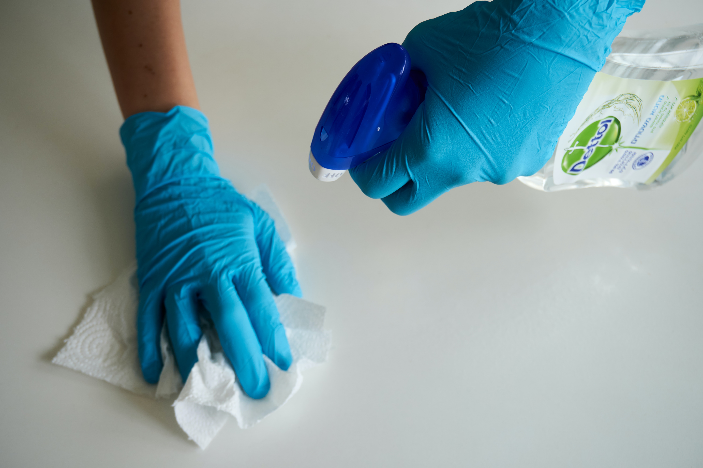

" ... To making cleaning a worry of the past for our client,
As we take over and lessen the burden of cleaning from their shoulders "
Company mission
At Revamped Mobile Cleaning, we are dedicated to making cleaning a worry of the past for all our clients, whether it's your home, office, medical facility, shopping center, or shopping malls or any other space, we have got the expertise and experience, moreover, the dedication to deliver first-class and top-notch cleaning services. Our mission is to provide a clean, safe, and healthy environment for you, your family, and our customers.
Services We offer

Residential Cleaning

Malls And Shopping Centres

Window cleaning

Hospital and Medical centres

Daily office cleaning